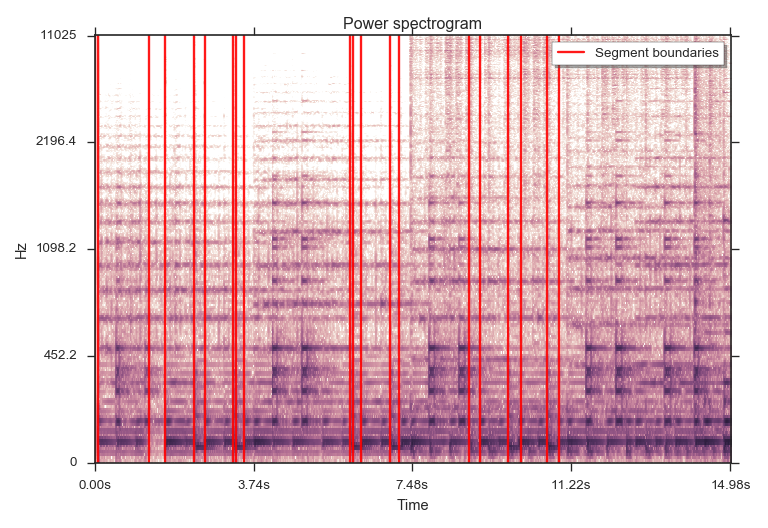

librosa.segment.agglomerative¶
-
librosa.segment.agglomerative(data, k, clusterer=None, axis=-1)[source]¶ Bottom-up temporal segmentation.
Use a temporally-constrained agglomerative clustering routine to partition
datainto k contiguous segments.Parameters: data : np.ndarray
data to cluster
k : int > 0 [scalar]
number of segments to produce
clusterer : sklearn.cluster.AgglomerativeClustering, optional
An optional AgglomerativeClustering object. If None, a constrained Ward object is instantiated.
axis : int
axis along which to cluster. By default, the last axis (-1) is chosen.
Returns: boundaries : np.ndarray [shape=(k,)]
left-boundaries (frame numbers) of detected segments. This will always include 0 as the first left-boundary.
Examples
Cluster by chroma similarity, break into 20 segments
>>> y, sr = librosa.load(librosa.util.example_audio_file(), duration=15) >>> chroma = librosa.feature.chroma_cqt(y=y, sr=sr) >>> bounds = librosa.segment.agglomerative(chroma, 20) >>> bound_times = librosa.frames_to_time(bounds, sr=sr) >>> bound_times array([ 0. , 1.672, 2.322, 2.624, 3.251, 3.506, 4.18 , 5.387, 6.014, 6.293, 6.943, 7.198, 7.848, 9.033, 9.706, 9.961, 10.635, 10.89 , 11.54 , 12.539])
Plot the segmentation over the chromagram
>>> import matplotlib.pyplot as plt >>> plt.figure() >>> librosa.display.specshow(chroma, y_axis='chroma', x_axis='time') >>> plt.vlines(bound_times, 0, chroma.shape[0], color='linen', linestyle='--', ... linewidth=2, alpha=0.9, label='Segment boundaries') >>> plt.axis('tight') >>> plt.legend(frameon=True, shadow=True) >>> plt.title('Power spectrogram') >>> plt.tight_layout()
